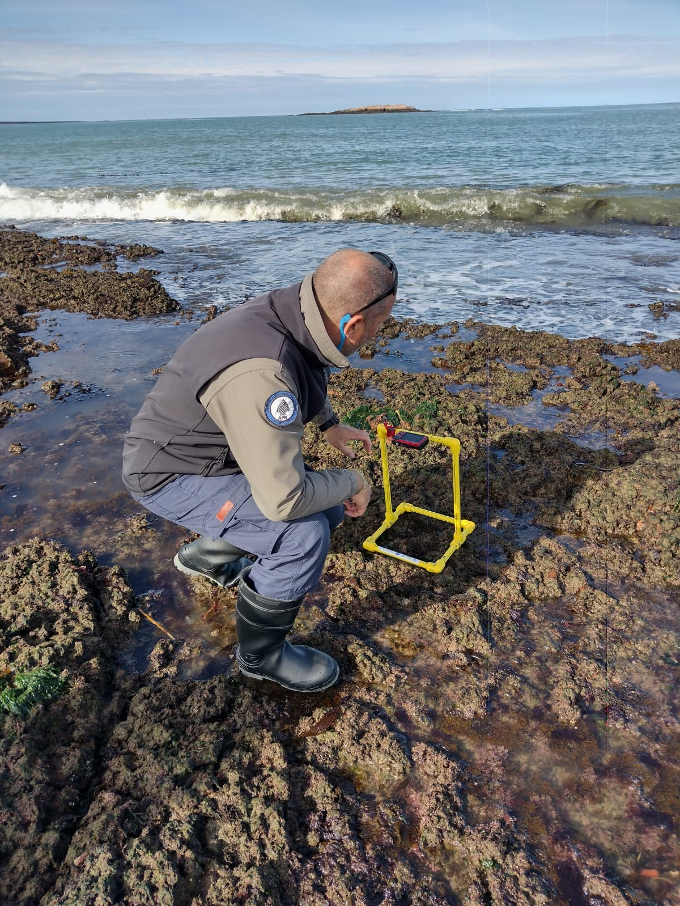

Participantes del Taller

El taller contará con la participación de Guardaparques y
Guardafaunas de Parques
Nacionales de Argentina, Centro
IDEAL, Algalab de
la Universidad de Concepción, Universidad de Valparaíso, investigadores de
la Universidad Nacional de Tierra del
Fuego, funcionarios de la Secretaría
de Ambiente de Tierra del Fuego, personal de la Wildlife Conservation Society de
Chile, y clubes de
ciencia de Tierra del Fuego:
- Parque
Nacional Tierra del Fuego
- Monte
León
- Parques
Interjurisdiccionales Marino Costero Patagonia Austral:
- Parque
Karukinka
Lista de Participantes
Nombre
Apellido
Afiliación
País
Rol
Enrique
Montes
U. Miami CIMAS / NOAA AOML
USA
Organizador principal / Instructor
Gregorio
Bigatti
IBIOMAR / CONICET
Argentina
Organizador principal / Instructor
Erasmo
Macaya
Universidad de Concepción
Chile
Organizador principal / Instructor
Gonzalo
Bravo
IBIOMAR / CONICET
Argentina
Organizador / Instructor
María
Bagur
CADIC / CONICET
Argentina
Organizador/ Participante
Ian
Walker
APN Makenke
Argentina
Instructor
Ariel
Rodriguez Albertani
APN Isla Pingüino
Argentina
Instructor
Mariela
Gauna
APN Monte Leon
Argentina
Instructor
Javiera
Constanzo
WCS Chile - Parque Karukinka
Chile
Participante
Cláudia
Pereira
WCS Chile - Parque Karukinka
Chile
Participante
Claudia
Betancourt
Universidad Austral - Valdivia
Chile
Participante
Nelson
Valdivia
Universidad Austral - Valdivia
Chile
Participante
Kai
Giancaspero Vilaza
Universidad de Valparaíso - Valparaíso
Chile
Participante
Eloisa
Gimenez
Clubes de Ciencia Tierra del Fuego
Argentina
Participante
Yamila Natalia
Nohra
Secretaría de Ambiente - Tierra del Fuego (Ushuaia)
Recursos Hidricos
Argentina
Participante
Julieta
Kaminsky
CADIC / CONICET
Argentina
Participante
Matias
Delpiani
CADIC / CONICET
Argentina
Participante
Gabriela
Garraza
CADIC / CONICET -UNTDF
Argentina
Participante
Malena
Pfoh
CADIC / CONICET
Argentina
Participante
Cecilia
Alonso
U. Nacional Tierra del Fuego / Secretaría de Pesca
Tierra del Fuego
Argentina
Participante
Lu
Chiberry
CADIC / CONICET
Argentina
Participante
Guillermina
Massaccesi
APN Ushuaia
Argentina
Participante
Luciana
Acuña
APN Ushuaia
Argentina
Participante
Evelyn
Contreras Flores
APN Ushuaia
Argentina
Participante
Juan
Alderete Mayorga
Secretaria de Ambiente (Rio Grande)
Argentina
Participante
Emanuel
Mendieta
Secretaria de Ambiente (Rio Grande)
Argentina
Participante
Lorena
Ladux
Secretaria de Ambiente - (Rio Grande )
Argentina
Participante
Agustín
Ramos
Areas Naturales Protegidas del Municipio de Río
Grande
Argentina
Participante
Andrés
Fernandez
Secretaria de Ambiente - Tierra del Fuego
(Ushuaia)
Argentina
Participante
María Laura
Flotron
Secretaria de Ambiente - Tierra del Fuego
(Ushuaia)
Argentina
Participante
María Luisa
Carranza
Secretaria de Ambiente - Tierra del Fuego
(Ushuaia)
Argentina
Participante
Lida E.
Pimper
APN Ushuaia
Argentina
Participante
Ignacio
Chiesa
CADIC / CONICET
Argentina
Participante
Lucía
Rodríguez Planes
APN División Regional
Argentina
Participante
Francisco
Zunino
APN División Regional
Argentina
Participante
© 2023 
El taller contará con la participación de Guardaparques y Guardafaunas de Parques Nacionales de Argentina, Centro IDEAL, Algalab de la Universidad de Concepción, Universidad de Valparaíso, investigadores de la Universidad Nacional de Tierra del Fuego, funcionarios de la Secretaría de Ambiente de Tierra del Fuego, personal de la Wildlife Conservation Society de Chile, y clubes de ciencia de Tierra del Fuego:
- Parque Nacional Tierra del Fuego
- Monte León
- Parques Interjurisdiccionales Marino Costero Patagonia Austral:
- Parque Karukinka
Lista de Participantes
| Nombre | Apellido | Afiliación | País | Rol |
|---|---|---|---|---|
| Enrique | Montes | U. Miami CIMAS / NOAA AOML | USA | Organizador principal / Instructor |
| Gregorio | Bigatti | IBIOMAR / CONICET | Argentina | Organizador principal / Instructor |
| Erasmo | Macaya | Universidad de Concepción | Chile | Organizador principal / Instructor |
| Gonzalo | Bravo | IBIOMAR / CONICET | Argentina | Organizador / Instructor |
| María | Bagur | CADIC / CONICET | Argentina | Organizador/ Participante |
| Ian | Walker | APN Makenke | Argentina | Instructor |
| Ariel | Rodriguez Albertani | APN Isla Pingüino | Argentina | Instructor |
| Mariela | Gauna | APN Monte Leon | Argentina | Instructor |
| Javiera | Constanzo | WCS Chile - Parque Karukinka | Chile | Participante |
| Cláudia | Pereira | WCS Chile - Parque Karukinka | Chile | Participante |
| Claudia | Betancourt | Universidad Austral - Valdivia | Chile | Participante |
| Nelson | Valdivia | Universidad Austral - Valdivia | Chile | Participante |
| Kai | Giancaspero Vilaza | Universidad de Valparaíso - Valparaíso | Chile | Participante |
| Eloisa | Gimenez | Clubes de Ciencia Tierra del Fuego | Argentina | Participante |
| Yamila Natalia | Nohra | Secretaría de Ambiente - Tierra del Fuego (Ushuaia) Recursos Hidricos | Argentina | Participante |
| Julieta | Kaminsky | CADIC / CONICET | Argentina | Participante |
| Matias | Delpiani | CADIC / CONICET | Argentina | Participante |
| Gabriela | Garraza | CADIC / CONICET -UNTDF | Argentina | Participante |
| Malena | Pfoh | CADIC / CONICET | Argentina | Participante |
| Cecilia | Alonso | U. Nacional Tierra del Fuego / Secretaría de Pesca Tierra del Fuego | Argentina | Participante |
| Lu | Chiberry | CADIC / CONICET | Argentina | Participante |
| Guillermina | Massaccesi | APN Ushuaia | Argentina | Participante |
| Luciana | Acuña | APN Ushuaia | Argentina | Participante |
| Evelyn | Contreras Flores | APN Ushuaia | Argentina | Participante |
| Juan | Alderete Mayorga | Secretaria de Ambiente (Rio Grande) | Argentina | Participante |
| Emanuel | Mendieta | Secretaria de Ambiente (Rio Grande) | Argentina | Participante |
| Lorena | Ladux | Secretaria de Ambiente - (Rio Grande ) | Argentina | Participante |
| Agustín | Ramos | Areas Naturales Protegidas del Municipio de Río Grande | Argentina | Participante |
| Andrés | Fernandez | Secretaria de Ambiente - Tierra del Fuego (Ushuaia) | Argentina | Participante |
| María Laura | Flotron | Secretaria de Ambiente - Tierra del Fuego (Ushuaia) | Argentina | Participante |
| María Luisa | Carranza | Secretaria de Ambiente - Tierra del Fuego (Ushuaia) | Argentina | Participante |
| Lida E. | Pimper | APN Ushuaia | Argentina | Participante |
| Ignacio | Chiesa | CADIC / CONICET | Argentina | Participante |
| Lucía | Rodríguez Planes | APN División Regional | Argentina | Participante |
| Francisco | Zunino | APN División Regional | Argentina | Participante |